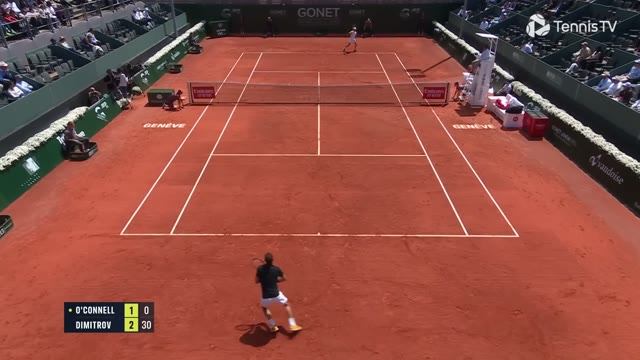
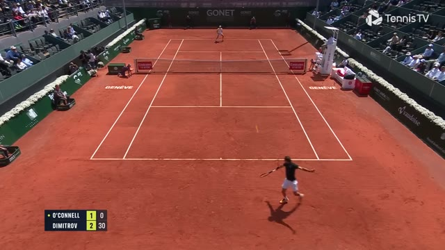
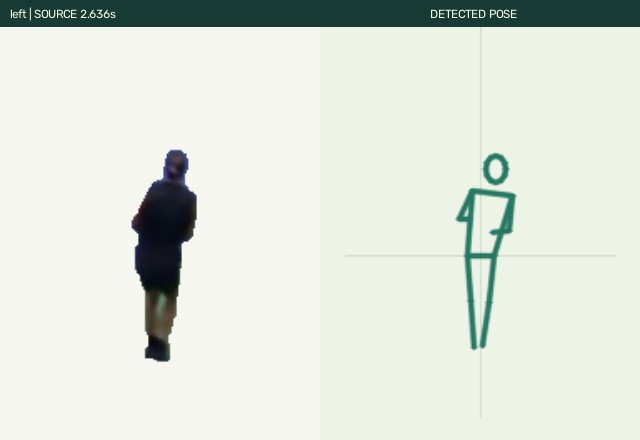
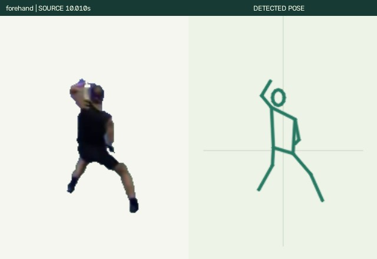
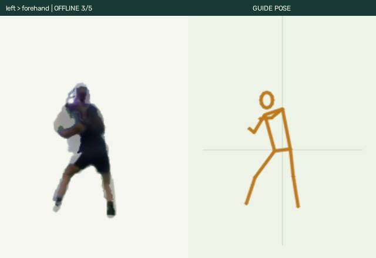
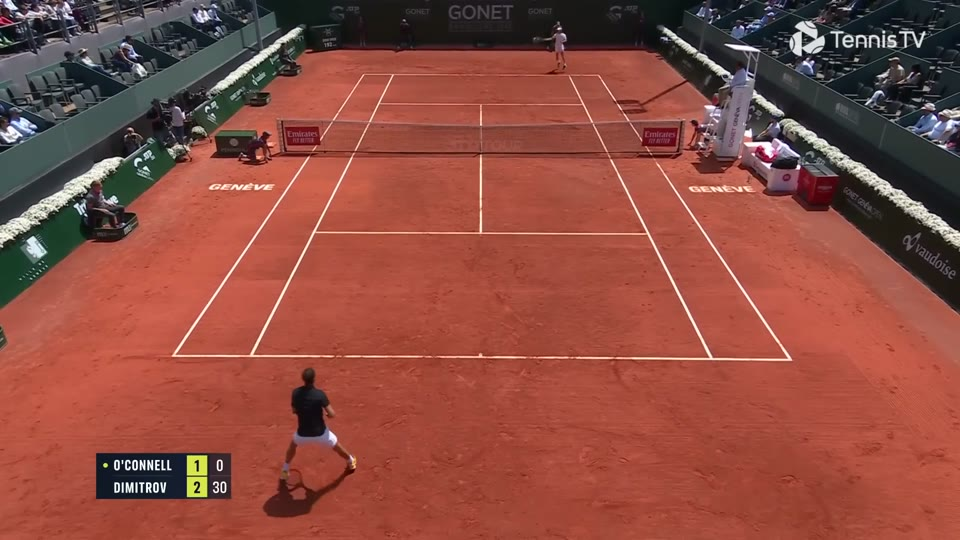

Week 8 · framework figure
VideoPlay Harness: From Watching to Playing. Reference video → the agent decomposes it into static, passive and dynamic parts, builds each part step by step, and writes a playable program. Scope: Video → Playable Program. No video renderer, no RL.


A rally: the near player moves and swings; the ball and the scoreboard change.
Once decided, the split is fixed.
ball: serve → fly → bounce score: +1 when a side misses player: ← → ↑ ↓ move
The simplest flow for each passive part, and a rough guess for the dynamic one.
on key → state # 3 pos += dir · speed[state] if state in (forehand, backhand) and t in hit_window[state] and dist(ball, racket) < reach: hit(ball) if ball.out or ball.bounced_twice: score[other] += 1 serve_again()
(a) States suited to keyboard play
(b) Attributes per state
| state | key | attribute | source |
|---|---|---|---|
| idle | none | loop | video |
| move ← → | arrows | run speed 340 px/s | video |
| move ↑ ↓ | arrows | run speed 240 px/s | few clips |
| forehand | J | 1.8 s · hit window | video |
| backhand | K | 1.6 s · hit window | video |
| serve | S | only from idle | added |
State clips, cut from the video


Simplified state machine
node = state clip · edge = transition
Transitions between states

Action sequences: clips and transitions follow the player in the video.

net: y=150, collider
baseline: y=356
depth: estimated
←→↑↓ move · Space swing · click to play
A check points to a place to look. It does not prove the root cause.
ball track error vs the video · hit / bounce / point event F1 · rule checks under new inputs
e.g. the ball passes through the net; one point scored twice
fix → rules and parameters (2)
state set vs labelled segments · speed and stroke-length distributions vs the video · key recoverable from frames · key → response delay
e.g. runs faster than the player; serve possible while moving
fix → states, attributes, connections (3)
held-out real transitions vs generated · jerk, foot sliding, bone length · jump at the seam · look and style vs the source
e.g. ghosting in left → forehand
fix → clips and transition method (4)
action/states.jsonDecompose once, draft each mechanism, let Action define the playable states and refine the mechanism, then build Character and Scene; per-module evaluation sends each fix back to Mechanism, Action or Character.